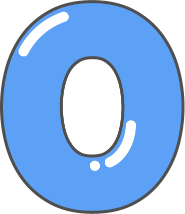

home
game
OX 퀴즈
우리아이의 창의력을 키워줄 간단한 OX퀴즈를 맞춰보세요!
start
물총새 수컷은 부리 아래쪽이 붉다.
자신이 고안한 천체망원경으로 목성도 위성을 가지고 있다는 사실을 처음 관찰한 과학자는 코페르니쿠스 이다.
바다에서 살다 알을 낳기 위해 강으로 다시 돌아오는 물고기로, 계어라고도 부르는 이 물고기는 연어 이다.
사람의 몸 중에서 산소가 가장 많이 필요한 곳은 뇌 이다.
태양은 거센 불덩이가 활활 타오르고 있는 항성이다. 태양의 표면 온도는 약 6000도 이다.
부리 아랫쪽이 붉은 것은 암컷이예요.
이탈리아의 철학자 겸 발명가인갈릴레오 갈릴레이 입니다..

정답입니다.
정답입니다.
정답입니다.